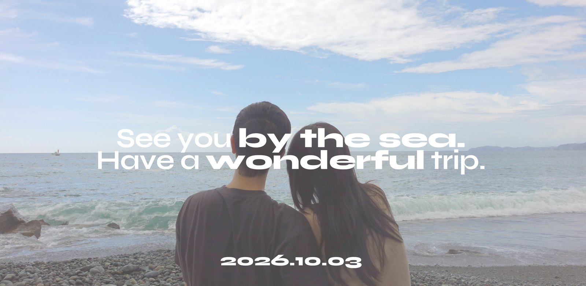

2026년 가을,
바다 옆 작은 마을에서
소중한 하루를 준비했습니다.
저희가 새로운 계절을 시작하는 날입니다.
함께, 오래도록 기억될 시간을 나누고 싶습니다.
이곳으로 향하는 여정이
설레는 여행이 되기를 바랍니다.
{{groomParents}}차남 {{groomFirst}}
{{brideParents}}차녀 {{brideFirst}}
Boarding Pass
Date
{{dateDisplay}}
Ceremony
{{ceremony}}
Venue
{{venue}}
{{address}}
D-Day
—
—
—
{{timeNote}}
{{venue}}에서,
{{outdoor}}
{{shoes}}
충분한 주차공간이 마련되어 있습니다.
{{address}}
멀리서도 축하의 마음을
전하고 싶으신 분들을 위해
계좌번호를 안내드립니다.
따뜻한 마음에 깊이 감사드립니다.
